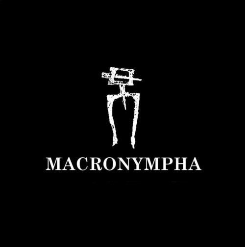

https://macronymphapo.bandcamp.com/album/intensive-care
Since 1990 Macronympha has been one of the leading acts in the American Noise scene.
Founded in Pittsburgh and featured on over 200 albums; MACRONYMPHA is an unstoppable force.

